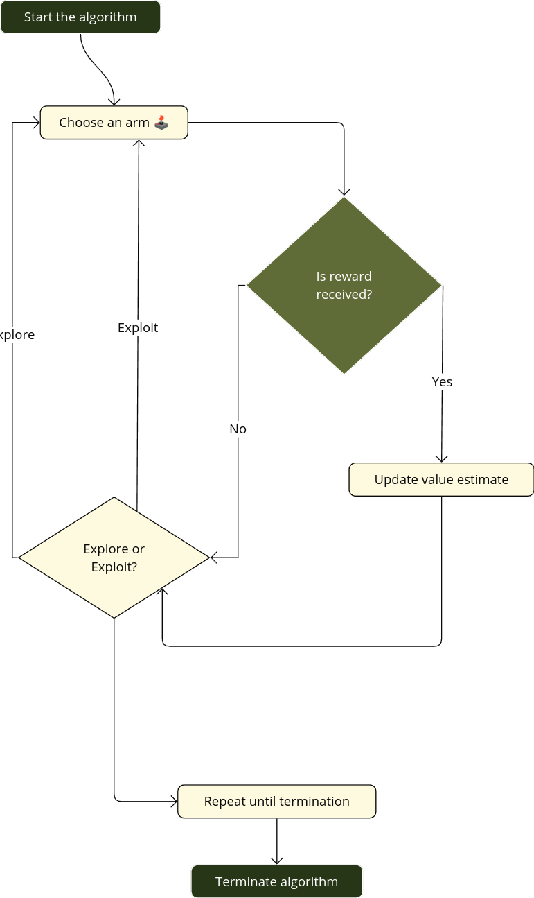

Multi-armed Bandits
Multi-armed Bandits
A very important feature distinguishing reinforcement learning from other types of learning is that it uses training information to evaluate the actions taken, rather than instruct by giving correct actions.
A \(k\)-armed Bandit Problem
We consider the following setup:
- You repeatedly face a choice among \(k\) different options or actions.
- After a choice, you receive a numerical reward chosen from a stationary probability distribution that depends on the action you selected
- Your goal is to maximize the total expected reward over a specific time period, such as 1000 action selections or time steps. The problem is named by analogy to a slot machine, or
one-armed bandit, except that it has \(k\) levers instead of one.
We denote the action selected on time step \(t\) as \(A_t\) and the corresponding reward as \(R_t\). Each of the \(k\) actions has an expected or mean reward given that that action is selected; let us call this the value of that action.
The value then of an arbitrary action \(a\), denoted \(q_{*} (a)\), is the expected reward given that \(a\) is selected:
\[ q_{*}(a): = \mathbb{E} \left[ R_t | A_t =a\right]. \]
If you knew the value of each action, then we solve the \(k\)-armed bandit problem—you would always select the action with highest value.
We assume that you may not have precise knowledge of the action values, although you may have some estimates. We denote this estimated value of action \(a\) at time step \(t\) as \(Q_t(a)\). Thus, we would like that \[ Q_t(a) \approx q_{*}(a). \]
If you maintain estimates of the action values, then at any time step there is at least one action whose estimated value is greatest. We call these the greedy actions. When you select one of these actions, we say that you are exploiting your current knowledge of the values of the actions. If instead you select one of the non-greedy actions, then we say you are exploring, because this enables you to improve your estimate of the non-greedy action’s value.
Exploitation is the right thing to do to maximize the expected reward on the one step, but exploration may produce the greater total reward in the long run.
Reward is lower in the short run, during exploration, but higher in the long run because after you have discovered the better actions, you can exploit them many times. Because it is not possible both to explore and to exploit with any single action selection, one often refers to the “conflict” between exploration and exploitation.
In any specific case, whether it is better to explore or exploit depends in a complex way on the precise values of the estimates, uncertainties, and the number of remaining steps. There are many sophisticated methods for balancing exploration and exploitation for particular mathematical formulations of the \(k\)-armed bandit and related problems.
However, most of these methods make strong assumptions about stationary and prior knowledge that are either violated or impossible to verify in most applications.
The guarantees of optimality or bounded loss for these methods offer little comfort when the assumptions of their theory do not apply.
Action-value Methods
One natural way to estimate the value of a given action is by averaging the rewards actually received. In mathematical symbols reads
\[ Q_t(a):= \dfrac{ \sum_{i=1}^{t-1} R_i \cdot \mathbb{1}_{A_{i} = a} }{\sum_{i=1}^{t-1} \mathbb{1}_{A_i=a}} . \tag{1.1}\]
Next we understand as greedy action as the action that results from \[ A_t := \underset{a}{\mathrm{argmax}} \ Q_t(a). \tag{1.2}\]
Greedy action selection always exploits current knowledge to maximize immediate reward. It also only spends time sampling apparently superior actions. A simple alternative is to behave greedily but occasionally, with a small \(\epsilon\)-probability, select randomly from all the actions with equal probability, regardless of the action-value estimates. We call methods using this near-greedy action selection rule \(\epsilon\)-greedy methods.
The 10-armed Testbed
To evaluate the relative effectiveness of the greedy and \(\epsilon\)-greedy action-value methods, we compared them numerically on a suite of test problems.
Set up
Consider a \(k\)-bandit problem with \(k=10\)
For each bandit problem, the action values
\[ q_{*}(a) \sim \mathcal{N}(0,1) \]
- Then when choosing an action \(A_t\) the corresponding reward \(R_t\) is sampling from a Gaussian distribution \[ R_t \sim \mathcal{N}(q_{*}(A_t), 1) \]
k_armed_testbed.py
#k_armed_testbed.py
import numpy as np
from matplotlib import pyplot as plt
# Randomly sample mean reward for each action
means = np.random.normal(size=(10, ))
# Generate sample data based on normal distribution
data = [np.random.normal(mean, 1.0, 2000) for mean in means]
# Create violin plot
plt.figure(figsize=(8, 6), dpi=150)
plt.violinplot(
dataset=data,
showextrema=False,
showmeans=False,
points=2000
)
# Draw mean marks
for i, mean in enumerate(means):
idx = i + 1
plt.plot([idx - 0.3, idx + 0.3], [mean, mean],
c='black',
linewidth=1)
plt.text(idx + 0.2, mean - 0.2,
s=f"$q_*({idx})$",
fontsize=8)
# Draw 0-value dashed line
plt.plot(np.arange(0, 12), np.zeros(12),
c='gray',
linewidth=0.5,
linestyle=(5, (20, 10)))
plt.tick_params(axis='both', labelsize=10)
plt.xticks(np.arange(1, 11))
# get rid of the frame
for i, spine in enumerate(plt.gca().spines.values()):
if i == 2: continue
spine.set_visible(False)
# Draw labels
label_font = {
'fontsize': 12,
'fontweight': 'bold'
}
plt.xlabel('Action', fontdict=label_font)
plt.ylabel('Reward distribution', fontdict=label_font)
plt.margins(0)
plt.tight_layout()
plt.show()We consider a set of 2000 randomly generated \(k\)-armed bandit problems with \(k\) = 10. For each bandit problem, such as the one shown in the output of the above code. The action values, \(q_{*} (a), a = 1, . . . , 10\), were selected according to a normal (Gaussian) distribution with mean 0 and variance 1. Thus when we apply a learning method to this problem, the selected action \(A_t\) a time step \(t\) the regarding reward \(R_t\) is sampling from a normal distribution \[ R_{t} \sim \mathcal{N}(q_{*}(A_t), 1). \] Sutton and Barto (Sutton and Barto 2018, 28) calls this suite of test tasks the 10-armed test-bed. By using this suit of benchmarks, we can measure the performance of any learning method. In fact we also can observe its behavior while the learning improves with experience of 1000 time steps, when it is applied to a selected bandit of this bed. This makes up one run. Thus, if we iterate 2000 independent runs, each with different bandit problem, we can obtain a measure of learning algorithm’s average behavior.
Next we code functions to deploy the above experiment with \(\epsilon\)-greedy actions
utils.py
from typing import Any
import matplotlib.pyplot as plt
import numpy as np
from numpy import dtype, ndarray, signedinteger
# Get the action with the max Q value
def get_argmax(G:np.ndarray) -> ndarray[Any, dtype[signedinteger[Any]]]:
candidates = np.argwhere(G == G.max()).flatten()
# return the only index if there's only one max
if len(candidates) == 1:
return candidates[0]
else:
# instead break the tie randomly
return np.random.choice(candidates)
# Select arm and get the reward
def bandit(q_star:np.ndarray,
act:int) -> tuple:
real_rewards = np.random.normal(q_star, 1.0)
# optim_choice = int(real_rewards[act] == real_rewards.max())
optim_choice = int(q_star[act] == q_star.max())
return real_rewards[act], optim_choicePlease save the above script as utils.py in the firs level of the regrding project such that we can imported by the ist name fora example by from utils import bandit, plots
Incremental Implementation
Certainly! To express a more efficient method for estimating action values, we focus on using an incremental update formula rather than recalculating the average based on all past observations. The goal is to maintain a constant memory footprint and fixed computation per time step.
Incremental Update Formula for Action-Value Estimation
Let \(R_i\) denote the reward received after the \(i\)-th selection of the action.\(Q_n\) denote the estimate of the action value after the action has been chosen \(n-1\) times.
Instead of computing \(Q_n\) as the sample average of all observed rewards (which requires storing and summing all rewards), we use the incremental formula:
\[ Q_n = Q_{n-1} + \alpha \left(R_n - Q_{n-1}\right) \]
Where: \(Q_{n-1}\) is the previous estimate of the action value. \(R_n\) is the reward received on the \(n\)-th selection. \(\alpha\) is a constant step size, often set as \(\dfrac{1}{n}\) to mimic the behavior of sample averaging when the number of observations grows.
Derivation of the Incremental Formula
Start with the definition of the action value as the sample mean: \(\displaystyle Q_n =\dfrac{1}{n} \sum_{i=1}^{n} R_i\)
Express \(Q_n\) in terms of \(Q_{n-1}\): \[ Q_n = \frac{1}{n} \left[ \sum_{i=1}^{n-1} R_i + R_n \right] \]
This can be rearranged as: \[ Q_n = \frac{n-1}{n} \cdot Q_{n-1} + \frac{1}{n} \cdot R_n. \]
- Notice that \(\displaystyle \frac{n-1}{n} \cdot Q_{n-1} = Q_{n-1} - \frac{1}{n}\cdot Q_{n-1}\), so: \[ Q_n = Q_{n-1} + \frac{1}{n} \left(R_n -Q_{n-1}\right) \]
Here, \(\alpha = \dfrac{1}{n}\) adapts to the number of observations, ensuring the update balances the influence of new and past rewards.
Advantages of the Incremental Method
- Constant Memory: The method only requires storing \(Q_{n-1}\) and \(R_n\), avoiding the need to keep all past rewards.
- Fixed Computation: Each update involves a fixed, small number of operations, regardless of \(n\).
This approach efficiently updates the action-value estimate with minimal resources, making it suitable for online learning algorithms and scenarios where computational efficiency is critical.

Bellow a python implementation.
example_2_2_bandits_algo.py
import numpy as np
import matplotlib
import matplotlib.pyplot as plt
matplotlib.use('qt5agg')
import pickle
from utils import get_argmax, bandit
#SEED = 123456
#np.random.seed(SEED)
# running the k-armed bandit algorithm
def run_bandit(K:int,
q_star:np.ndarray,
rewards:np.ndarray,
optim_acts_ratio:np.ndarray,
epsilon:float,
num_steps:int=1000) -> None:
Q = np.zeros(K) # Initialize Q values
N = np.zeros(K) # The number of times each action been selected
ttl_optim_acts = 0
for i in range(num_steps):
# get action
A = None
if np.random.random() > epsilon:
A = get_argmax(Q)
else:
A = np.random.randint(0, K)
R, is_optim = bandit(q_star, A)
N[A] += 1
Q[A] += (R - Q[A]) / N[A]
ttl_optim_acts += is_optim
rewards[i] = R
optim_acts_ratio[i] = ttl_optim_acts / (i + 1)
if __name__ == "__main__":
# Initializing the hyperparameters
K = 10 # Number of arms
epsilons = [0.0, 0.01, 0.1]
num_steps = 1000
total_rounds = 1000
# Initialize the environment
q_star = np.random.normal(loc=0, scale=1.0, size=K)
rewards = np.zeros(shape=(len(epsilons), total_rounds, num_steps))
optim_acts_ratio = np.zeros(shape=(len(epsilons), total_rounds, num_steps))
# Run the k-armed bandits alg.
for i, epsilon in enumerate(epsilons):
for curr_round in range(total_rounds):
run_bandit(K, q_star,
rewards[i, curr_round],
optim_acts_ratio[i, curr_round],
epsilon,
num_steps)
rewards = rewards.mean(axis=1)
optim_acts_ratio = optim_acts_ratio.mean(axis=1)
record = {
'hyper_params': epsilons,
'rewards': rewards,
'optim_acts_ratio': optim_acts_ratio
}
fig_01, ax_01 = plt.subplots()
fig_02, ax_02 = plt.subplots()
for i, ratio in enumerate(optim_acts_ratio):
ax_01.plot(
ratio,
label=r'$\epsilon={epsilon_i}$'.format(epsilon_i=epsilons[i])
)
for i, reward in enumerate(rewards):
ax_02.plot(
reward,
label=r'$\epsilon={epsilon_i}$'.format(epsilon_i=epsilons[i])
)
ax_01.set_xlabel(r'$t$', fontsize=12)
ax_01.set_ylabel(r'Optimal Action', fontsize=12)
ax_01.legend(loc='best')
ax_02.set_xlabel(r'$t$', fontsize=12)
ax_02.set_ylabel(r'Reward', fontsize=12)
ax_02.legend(loc='best')
plt.show()
# with open('./history/record.pkl', 'wb') as f:
# pickle.dump(record, f)Tracking a Nonstationary Problem
The averaging methods we have discussed are suitable for stationary bandit problems, where the reward probabilities remain constant over time. However, in reinforcement learning, we often encounter non-stationary problems where it makes more sense to give greater weight to recent rewards than to rewards from a long time ago. One popular approach to achieve this is by using a constant step-size parameter.
#TODO: Formulation with constant alpha and implications
Optimistic Initial Values
example_2_3_OIV.py
import numpy as np
import matplotlib.pyplot as plt
import pickle
from utils import get_argmax, bandit
SEED = 200
np.random.seed(SEED)
# running the k-armed bandit algorithm
def run_bandit(K: int,
q_star: np.ndarray,
rewards: np.ndarray,
optim_acts_ratio: np.ndarray,
epsilon: float,
num_steps: int=1000,
init_val: int=0
) -> None:
Q = np.ones(K) * init_val # Initial Q values with OIV
ttl_optim_acts = 0
alpha = 0.1
for i in range(num_steps):
# get action
A = None
if np.random.random() > epsilon:
A = get_argmax(Q)
else:
A = np.random.randint(0, K)
R, is_optim = bandit(q_star, A)
Q[A] += alpha * (R - Q[A])
ttl_optim_acts += is_optim
rewards[i] = R
optim_acts_ratio[i] = ttl_optim_acts / (i + 1)
if __name__ == "__main__":
# Initializing the hyper-parameters
K = 10 # Number of arms
epsilons = [0.1, 0.0]
init_vals = [0.0, 5.0]
num_steps = 1000
total_rounds = 2000
# Initialize the environment
q_star = np.random.normal(loc=0, scale=1.0, size=K)
rewards = np.zeros(shape=(len(epsilons), total_rounds, num_steps))
optim_acts_ratio = np.zeros(shape=(len(epsilons), total_rounds, num_steps))
# Run the k-armed bandits alg.
for i, (epsilon, init_val) in enumerate(zip(epsilons, init_vals)):
for curr_round in range(total_rounds):
run_bandit(K, q_star,
rewards[i, curr_round],
optim_acts_ratio[i, curr_round],
epsilon=epsilon,
num_steps=num_steps,
init_val=init_val)
rewards = rewards.mean(axis=1)
optim_acts_ratio = optim_acts_ratio.mean(axis=1)
record = {
'hyper_params': [epsilons, init_vals],
'rewards': rewards,
'optim_acts_ratio': optim_acts_ratio
}
for vals in rewards:
plt.plot(vals)
plt.show()
# with open('./history/OIV_record.pkl', 'wb') as f:
# pickle.dump(record, f)Upper-Confidence-Bound Action Selection
example_2_4_UCB.py
from typing import Any
import numpy as np
import matplotlib.pyplot as plt
import pickle
from numpy import dtype, ndarray
from tqdm import tqdm
from utils import get_argmax, bandit
SEED = 200
np.random.seed(SEED)
# running the k-armed bandit algorithm
def run_bandit(
K: int,
q_star: np.ndarray,
rewards: np.ndarray,
optim_acts_ratio: np.ndarray,
epsilon: float,
num_steps: int = 1000
) -> None:
Q = np.zeros(K)
N = np.zeros(K) # The number of times each action been selected
ttl_optim_acts = 0
for i in range(num_steps):
A = None
# Get action
if np.random.random() > epsilon:
A = get_argmax(Q)
else:
A = np.random.randint(0, K)
R, is_optim = bandit(q_star, A)
N[A] += 1
Q[A] += (R - Q[A]) / N[A]
ttl_optim_acts += is_optim
rewards[i] = R
optim_acts_ratio[i] = ttl_optim_acts / (i + 1)
# running the bandit algorithm with UCB
def run_bandit_UCB(
K: int,
q_star: np.ndarray,
rewards: np.ndarray,
optim_acts_ratio: np.ndarray,
c: float,
num_steps: int = 1000
) -> None:
Q = np.zeros(K)
N = np.zeros(K) # The number of times each action been selected
ttl_optim_acts = 0
for i in range(num_steps):
A = None
# Avoid 0-division:
# If there's 0 in N, then choose the action with N = 0
if 0 in N:
candidates = np.argwhere(N == 0).flatten()
A = np.random.choice(candidates)
else:
confidence = c * np.sqrt(np.log(i) / N)
freqs: ndarray[Any, dtype[Any]] | Any = Q + confidence
A = np.argmax(freqs).flatten()
R, is_optim = bandit(q_star, A)
N[A] += 1
Q[A] += (R - Q[A]) / N[A]
ttl_optim_acts += is_optim
rewards[i] = R
optim_acts_ratio[i] = ttl_optim_acts / (i + 1)
if __name__ == "__main__":
# Initializing the hyper-parameters
K = 10 # Number of arms
num_steps = 1000
total_rounds = 100
q_star = np.random.normal(loc=0, scale=1.0, size=K)
hyper_params = {'UCB': 2, 'epsilon': 0.1}
rewards = np.zeros(shape=(len(hyper_params), total_rounds, num_steps))
optim_acts_ratio = np.zeros(
shape=(len(hyper_params), total_rounds, num_steps)
)
# Run bandit alg. with e-greedy
for curr_round in tqdm(range(total_rounds)):
# for curr_round in range(total_rounds):
run_bandit(
K,
q_star,
rewards[0, curr_round],
optim_acts_ratio[0, curr_round],
epsilon=hyper_params['epsilon'],
num_steps=num_steps
)
# Run UCB and get records
for curr_round in tqdm(range(total_rounds)):
# for curr_round in range(total_rounds):
run_bandit_UCB(
K,
q_star,
rewards[1, curr_round],
optim_acts_ratio[1, curr_round],
c=hyper_params['UCB'],
num_steps=num_steps
)
rewards = rewards.mean(axis=1)
optim_acts_ratio = optim_acts_ratio.mean(axis=1)
record = {
'hyper_params': hyper_params,
'rewards': rewards,
'optim_acts_ratio': optim_acts_ratio
}
data = rewards
plt.figure(figsize=(10, 6), dpi=150)
plt.grid(c='lightgray')
plt.margins(0.02)
# revers the loop for a better visualization
# colors = ['cornflowerblue', 'tomato', 'lightseagreen']
colors = ['r', 'b']
meta = record['hyper_params']
optim_ratio = (optim_acts_ratio * 100)
legends = [f'$\epsilon$-greedy $\epsilon$={meta["epsilon"]}',
f'UCB c={meta["UCB"]}']
fontdict = {
'fontsize': 12,
'fontweight': 'bold',
}
plt.plot(rewards[0, :], linestyle='-', linewidth=2 )
plt.plot(rewards[1, :], linestyle='-', linewidth=2)
plt.tick_params(axis='both', labelsize=10)
plt.xlabel('step', fontdict=fontdict)
plt.ylabel('reward', fontdict=fontdict)
plt.legend(loc=4, fontsize=13)
plt.show()
with open('./history/UCB_record.pkl', 'wb') as f:
pickle.dump(record, f)Gradient Bandit method
example_2_5_gradient.py
import numpy as np
import matplotlib.pyplot as plt
import pickle
import itertools
from utils import bandit
SEED = 50
np.random.seed(SEED)
def update_policy(H: np.ndarray) -> np.ndarray:
return np.exp(H) / np.exp(H).sum()
def update_H(
H: np.ndarray,
policy: np.ndarray,
alpha: float,
A: int,
curr_reward: float,
avg_reward: float
) -> np.ndarray:
selec = np.zeros(len(H), dtype=np.float32)
selec[A] = 1.0
H = H + alpha * (curr_reward - avg_reward) * (selec - policy)
return H
# running the k-armed bandit algorithm
def run_bandit(
K: int,
q_star: np.ndarray,
rewards: np.ndarray,
optim_acts_ratio: np.ndarray,
alpha: float,
baseline: bool,
num_steps: int = 1000
) -> None:
H = np.zeros(K, dtype=np.float32) # initialize preference
policy = np.ones(K, dtype=np.float32) / K
ttl_reward = 0
ttl_optim_acts = 0
for i in range(num_steps):
A = np.random.choice(np.arange(K), p=policy)
reward, is_optim = bandit(q_star, A)
avg_reward = 0
if baseline:
# Get average reward unitl timestep=i
avg_reward = ttl_reward / i if i > 0 else reward
# Update preference and policy
H = update_H(H, policy, alpha, A, reward, avg_reward)
policy = update_policy(H)
ttl_reward += reward
ttl_optim_acts += is_optim
rewards[i] = reward
optim_acts_ratio[i] = ttl_optim_acts / (i + 1)
if __name__ == "__main__":
# Initializing the hyperparameters
K = 10 # Number of arms
alphas = [0.1, 0.4]
baselines = [False, True]
hyper_params = list(itertools.product(baselines, alphas))
num_steps = 1000
total_rounds = 2000
rewards = np.zeros(shape=(len(hyper_params), total_rounds, num_steps))
optim_acts_ratio = np.zeros(
shape=(len(hyper_params), total_rounds, num_steps)
)
q_star = np.random.normal(loc=4.0, scale=1.0, size=K)
print(hyper_params)
for i, (is_baseline, alpha) in enumerate(hyper_params):
for curr_round in range(total_rounds):
run_bandit(
K,
q_star,
rewards[i, curr_round],
optim_acts_ratio[i, curr_round],
alpha,
is_baseline,
num_steps
)
optim_acts_ratio = optim_acts_ratio.mean(axis=1)
for val in optim_acts_ratio:
plt.plot(val)
plt.show()
record = {
'hyper_params': hyper_params,
'optim_acts_ratio': optim_acts_ratio
}
with open('./history/sga_record.pkl', 'wb') as f:
pickle.dump(record, f)Scripts for visualization
Run the following script and save the output.
plot_gradient.py
import matplotlib.pyplot as plt
import pickle
import numpy as np
# Plot results
def plot(
data: np.ndarray,
legends: list,
xlabel: str,
ylabel: str,
filename: str = None,
fn=lambda: None, ) -> None:
fontdict = {
'fontsize': 12,
'fontweight': 'bold',
}
plt.figure(figsize=(10, 6), dpi=150)
plt.grid(c='lightgray')
plt.margins(0.02)
# revers the loop for a better visualization
colors = ['navy', 'lightblue', 'tomato', 'pink']
for i in range(len(data) - 1, -1, -1):
# data[i] = uniform_filter(data[i])
plt.plot(data[i], label=legends[i], linewidth=1.5, c=colors[i])
# get rid of the top/right frame lines
for i, spine in enumerate(plt.gca().spines.values()):
if i in [0, 2]:
spine.set_linewidth(1.5)
continue
spine.set_visible(False)
plt.tick_params(axis='both', labelsize=10)
plt.xlabel(xlabel, fontdict=fontdict)
plt.ylabel(ylabel, fontdict=fontdict)
# plt.legend(loc=4, fontsize=13)
fn()
plt.text(500, 57, s="$\\alpha = 0.4$", c=colors[3], fontsize=14)
plt.text(500, 28, s="$\\alpha = 0.4$", c=colors[1], fontsize=14)
plt.text(900, 72, s="$\\alpha = 0.1$", c=colors[2], fontsize=14)
plt.text(900, 52, s="$\\alpha = 0.1$", c=colors[0], fontsize=14)
plt.text(770, 65, s="with baseline", c=colors[2], fontsize=12)
plt.text(770, 42, s="without baseline", c=colors[0], fontsize=12)
if not filename:
plt.show()
else:
plt.savefig(f'./plots/{filename}')
def plot_result(
optim_ratio: np.ndarray,
legends: list,
output_name: str = None
):
# Set tick labels
fn = lambda: plt.yticks(
np.arange(0, 100, 10), labels=[f'{val}%' for val in range(0, 100, 10)]
)
plot(
optim_ratio,
legends,
xlabel='Time step',
ylabel='% Optimal actions',
filename=output_name,
fn=fn
)
if __name__ == "__main__":
with open('./history/sga_record.pkl', 'rb') as f:
history = pickle.load(f)
optim_ratio = history['optim_acts_ratio'] * 100
hyper_params = history['hyper_params']
# plot_result(optim_ratio, hyper_params, output_name="example_2_5_sga.png")
plot_result(optim_ratio, hyper_params, output_name=None)
Summary
Outline:
- \(\epsilon\)-greedy Method:
- Overview of the method.
- Mathematical formulation.
- Parameter sensitivity and tuning.
- UCB (Upper Confidence Bound) Method:
- Explanation of UCB and its deterministic exploration mechanism.
- The mathematical equation governing UCB.
- Parameter considerations and impact on performance.
- Gradient Bandit Algorithm:
- Introduction to action preferences and how they differ from action values.
- Derivation of the softmax probability distribution.
- Discussion on parameter choice and influence on outcomes.
- Optimistic Initialization:
- How optimistic estimates influence exploration.
- Comparison with \(\epsilon\)-greedy methods.
Let’s begin with the \(\epsilon\) -greedy method:
1. \(\epsilon\)-greedy Method
This is one of the simplest algorithms to balance exploration and exploitation. The method works by choosing a random action with probability \(\epsilon\) (exploration) and the action with the highest estimated value (exploitation) with probability \(1 - \epsilon\).
Mathematical Formulation
- Let \(Q(a)\) be the estimated value of action \(a\).
- At each time step \(t\), the agent chooses:
- A random action \(a\) with probability \(\epsilon\).
- The action with the maximum \(Q(a)\),
- \(\text{argmax}_a Q(a)\), with probability \({1 - \epsilon}.\)
Update Rule
The estimate for the value of an action, \(Q(a)\), is updated using the following equation after observing a reward \(R_t\) for taking action \(a\): \[ Q_{t+1}(a) = Q_t(a) + \alpha \left( R_t - Q_t(a) \right) \]
Where:
\(\alpha\) is the step size or learning rate, determining how much the estimate is updated based on new information.
\(R_t\) is the reward received after action \(a\) at time \(t\).
Parameter Sensitivity
- \(\epsilon\): A small value of \(\epsilon\) (e.g., 0.01) results in a mostly greedy policy with occasional exploration, while a larger \(\epsilon\) (e.g., 0.1) encourages moreexploration. The optimal value balances sufficient exploration to discover rewarding actions while exploiting known high-value actions effectively.
2. UCB (Upper Confidence Bound) Method
UCB addresses the exploration-exploitation dilemma by adding a confidence term to the action value. The idea is to choose actions that might not have the highest estimated value but have been less explored, thus increasing exploration in a systematic way.
Mathematical Equation
The action \(a_t\) selected at time \(t\) is:
\[a_t = \text{argmax}_a \left( Q_t(a) + c \sqrt{\frac{\ln t}{N_t(a)}} \right) \]
Where:
- \(Q_t(a)\) is the estimated value of action \(a\) at time \(t\).
- \(c\) is a parameter controlling the degree of exploration. A larger \(c\) increases exploration.
- \(N_t(a)\) is the number of times action \(a\) has been selected so far.
- \(\ln t\) scales the confidence bound logarithmically with time.
This approach encourages the selection of actions with high uncertainty (lower ( N_t(a) )), balancing exploration based on how frequently each action has been tried.
Parameter Considerations
- The parameter \(c\) is crucial. If \(c\) is too low, the algorithm might not explore enough; if too high, it may explore excessively. The optimal \(c\) varies depending on the problem setting.
3. Gradient Bandit Algorithm
Unlike \(\epsilon\)-greedy and UCB methods that estimate action values, gradient bandit algorithms estimate action preferences, denoted \(H(a)\). These preferences are used to determine the probability of selecting each action.
Softmax Distribution
The probability of selecting action \(a\) is given by: \[ \pi(a) =\dfrac{e^{H(a)}}{\displaystyle \sum_{b=1} ^{k} e^{H(b)}} \]
Where:
- \(H(a)\) is the preference for action \(a\).
- \(\pi(a)\) represents the probability of taking action \(a\).
Update Rule
The preferences are updated based on the received reward as follows:
\[ \begin{aligned} H_{t+1}(a) &= H_t(a) + \alpha (R_t - \bar{R}_t)(1 - \pi_t(a)) \quad \text{if action } a \text{ was chosen} \\ H_{t+1}(b) &= H_t(b) - \alpha (R_t - \bar{R}_t)\pi_t(b) \quad \text{for all other actions } b \end{aligned} \]
Where:
- \(\alpha\) is the learning rate.
- \(\bar{R}_t\) is the average reward received so far, acting as a baseline to stabilize learning.
This update rule encourages actions that receive above-average rewards while discouraging less rewarding ones.
4. Optimistic Initialization
This is a simple method where the initial estimates \(Q_0(a)\) are set to high values, encouraging the algorithm to explore different actions because all initial action values seem promising.
Comparison with \(\epsilon\)-greedy
- Unlike \(\epsilon\)-greedy, which uses a random chance for exploration, optimistic initialization drives exploration until the agent converges on accurate value estimates.
- It is especially useful when the reward distribution is unknown but expected to have some higher values.
Final Remarks:
To determine which algorithm is most effective in practice:
- A parameter study is essential, as highlighted in the passage. This involves varying parameters (like \(\epsilon\), \(c\), or \(\alpha\)) to find the optimal range for each algorithm.
- Learning curves provide insight into how each algorithm performs over time. Averaging these curves over several runs ensures statistical reliability.
example_2_6_summary.py
import numpy as np
from matplotlib import pyplot as plt
from collections import namedtuple
import tqdm
import pickle
from example_2_2_bandits_algo import run_bandit as e_greedy
from example_2_3_OIV import run_bandit as OIV
from example_2_4_UCB import run_bandit_UCB as UCB
from example_2_5_gradient import run_bandit as gradient
SEED = 200
np.random.seed(SEED)
# A wrapper function for running different algorithms
def run_algorithm(
fn_name: str,
fn: 'function',
params: np.ndarray,
args: dict,
total_rounds: int
) -> np.ndarray:
global hyper_param
if fn_name == 'e_greedy':
hyper_param = 'epsilon'
elif fn_name == 'ucb':
hyper_param = 'c'
elif fn_name == 'gradient':
hyper_param = 'alpha'
elif fn_name == 'oiv':
hyper_param = 'init_val'
args[hyper_param] = None
rewards_hist = np.zeros(
shape=(len(params), total_rounds, args['num_steps'])
)
optm_acts_hist = np.zeros_like(rewards_hist)
for i, param in tqdm.tqdm(enumerate(params), desc=fn_name, position=0):
args[hyper_param] = param
for curr_round in tqdm.tqdm(
range(total_rounds),
desc=f'{fn_name}: {param}',
position=i+1,
leave=True
):
fn(
**args,
rewards=rewards_hist[i, curr_round],
optim_acts_ratio=optm_acts_hist[i, curr_round]
)
print('\n')
return rewards_hist.mean(axis=1).mean(axis=1)
if __name__ == "__main__":
K = 10
num_steps = 1000
total_rounds = 2000
q_star = np.random.normal(loc=0, scale=1.0, size=K)
# Creating parameter array: [1/128, 1/64, 1/32, 1/16, ...]
multiplier = np.exp2(np.arange(10))
params = np.ones(10) * (1 / 128)
params *= multiplier
x_labels = ['1/128', '1/64', '1/32', '1/16', '1/8', '1/4', '1/2', '1', '2',
'4']
# Creating a dict to record running histories
records = {
'params': params,
'x_labels': x_labels
}
history = namedtuple('history', ['bounds', 'data'])
base_args = {
'K': K,
'q_star': q_star,
'num_steps': num_steps
}
# ======== e_greedy ========
eps_bounds = [0, 6]
fn_params = params[eps_bounds[0]: eps_bounds[1]]
eps_rewards = run_algorithm(
'e_greedy', e_greedy, fn_params, base_args.copy(), total_rounds
)
records['e_greedy'] = history(eps_bounds, eps_rewards)
# ======== UCB ========
ucb_bounds = [3, 10]
fn_params = params[ucb_bounds[0]: ucb_bounds[1]]
ucb_rewards = run_algorithm(
'ucb', UCB, fn_params, base_args.copy(), total_rounds
)
records['ucb'] = history(ucb_bounds, ucb_rewards)
# ======== Gradient ========
gd_bounds = [2, 9]
fn_params = params[gd_bounds[0]:gd_bounds[1]]
gd_args = base_args.copy()
gd_args['baseline'] = True
gd_rewards = run_algorithm(
'gradient', gradient, fn_params, gd_args, total_rounds
)
records['gradient'] = history(gd_bounds, gd_rewards)
# ======== OIV ========
oiv_bounds = [5, 10]
fn_params = params[oiv_bounds[0]:oiv_bounds[1]]
oiv_args = base_args.copy()
oiv_args['epsilon'] = 0.0
oiv_rewards = run_algorithm('oiv', OIV, fn_params, oiv_args, total_rounds)
records['oiv'] = history(oiv_bounds, oiv_rewards)
with open('./history/summary.pkl', 'wb') as f:
pickle.dump(records, f)Visualization
plot_sumary.py
import pickle
import numpy as np
import matplotlib.pyplot as plt
from collections import namedtuple
history = namedtuple('history', ['bounds', 'data'])
algos = ['e_greedy', 'gradient', 'ucb', 'oiv']
if __name__ == '__main__':
with open('./history/summary.pkl', 'rb') as f:
histories = pickle.load(f)
coords = [[0.95, 1.55], [6.5, 1.45], [3, 1.82], [8.5, 1.82]]
legend_loc = 2
filename = './plots/example_2_6_summary.png'
# with open('./history/exercise_2_6.pkl', 'rb') as f:
# histories = pickle.load(f)
# coords = [[2.5, 6.0], [7.0, 3.5], [7.5, 5.0], [6.5, 5.7]]
# legend_loc = 0
# filename = './plots/exercise_2_6.png'
x_ticks = histories['x_labels']
plt.figure(figsize=(10, 6), dpi=150)
plt.grid(c='lightgray')
plt.margins(0.02)
fontdict = {
'fontsize': 12,
'fontweight': 'bold',
}
legends = ['$\epsilon$', '$\\alpha$', '$c$', '$Q_0$']
colors = ['tomato', 'mediumseagreen', 'steelblue', 'orchid']
for i, key in enumerate(algos):
record = histories[key]
bounds = record.bounds
data = record.data
plt.plot(
np.arange(bounds[0], bounds[1]), data, label=legends[i], c=colors[i]
)
for i, spine in enumerate(plt.gca().spines.values()):
if i in [0, 2]:
spine.set_linewidth(1.5)
continue
spine.set_visible(False)
plt.tick_params(axis='both', labelsize=10)
plt.xticks(np.arange(10), x_ticks)
# x labels
plt.legend(loc=legend_loc, fontsize=12, title='Hyper Param.')
plt.xlabel('Hyper parameter value', fontdict=fontdict)
plt.ylabel(
'Average reward over first 1000 steps',
fontdict=fontdict
)
plt.text(*coords[0], '$\epsilon$-greedy', c=colors[0], fontsize=12)
plt.text(
*coords[1], 'gradient\nbandit', c=colors[1], fontsize=12,
horizontalalignment='center'
)
plt.text(*coords[2], 'UCB', c=colors[2], fontsize=12)
plt.text(
*coords[3], 'greedy with\noptimistic\ninitializatio\n$\\alpha=0.1$',
c=colors[3], fontsize=12, horizontalalignment='center'
)
# plt.show()
plt.savefig(filename)